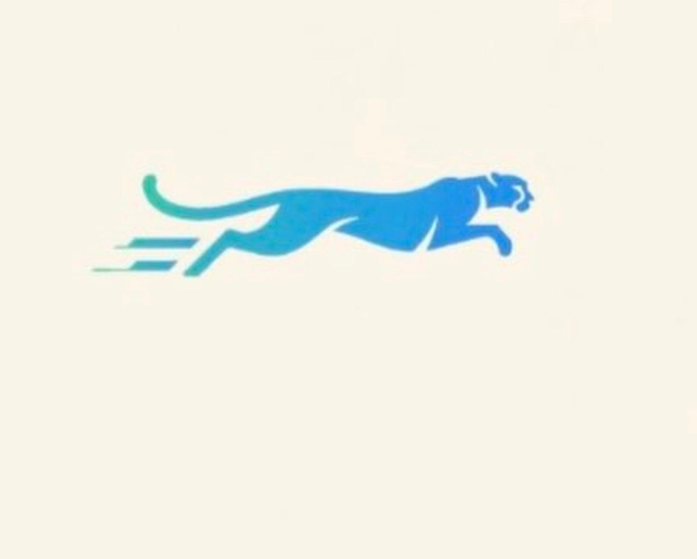
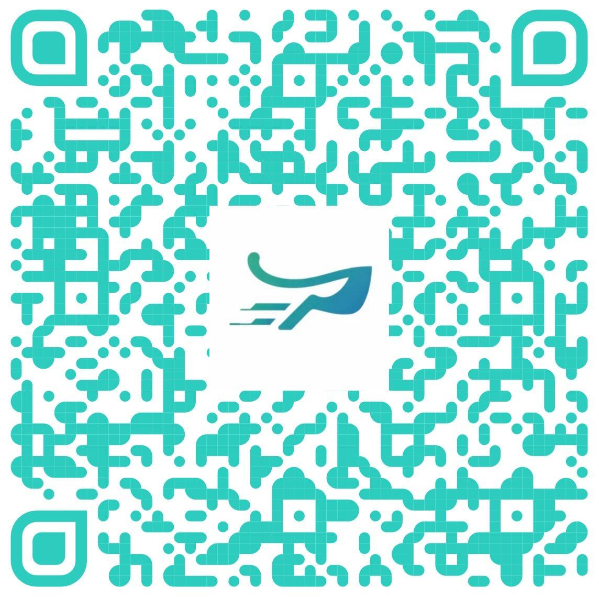
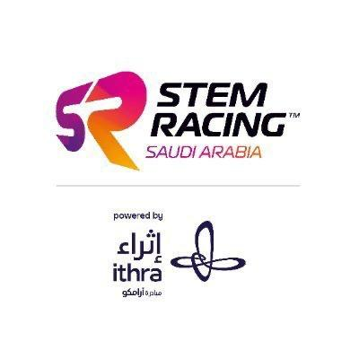

SCAN
STEM Racing is a global educational program that aims to raise awareness of STEM and Formula 1® cars and technology among school students around the world.
Students are challenged and inspired through a STEM-based learning program covering topics including physics, aerodynamics, design, manufacturing, branding, graphics, sponsorship, marketing, leadership/teamwork, media skills, and financial strategy.
Athar means impact — the trace that remains after motion.
We chose this name because our goal is not just to compete, but to leave a clear mark through performance, discipline, and innovation.
Athar is aiming beyond this season.
Athar means “impact” or “trace,” which represents the mark we aim to leave through innovation and performance.
We chose the cheetah because it perfectly reflects our identity—fast, focused, and precise.
Just like the cheetah leaves a powerful trace on the ground as it sprints, our team strives to leave a lasting impact in every challenge we take on.
Speed alone isn’t enough; it’s about control, strategy, and purpose—and that’s what Athar stands for.